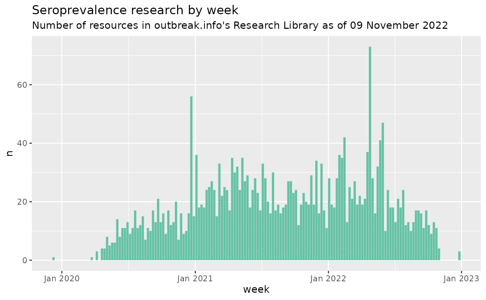

outbreak.info is a project to enable the tracking of SARS-CoV-2 Variants within the COVID-19 pandemic. This R package offers access to the data we have gathered and calculated to replicate the visualizations on outbreak.info. Here, we’ll outline some of the basic functionality of the R package to access the genomic (SARS-CoV-2 variant) data, research library, and epidemiology data (COVID-19 cases and deaths).
SARS-CoV-2 variant prevalence
The core functionality within the suite of Variant Prevalence Functions include accessing data for:
- Variant prevalence over time
- Cumulative variant prevalence
- Calculating mutation prevalence within a variant
Getting started
Before we start, we need to provide our GISAID credentials to access the genomic data. If you don’t have a GISAID account, you can register for one on their website. It may take a day or two for the account to become active.
# Install the package, if you haven't already, using devtools
devtools::install_github("outbreak-info/R-outbreak-info")
# Package imports
library(outbreakinfo)
#> Warning: replacing previous import 'crayon::%+%' by 'ggplot2::%+%' when loading
#> 'outbreakinfo'
#> Warning: replacing previous import 'jsonlite::flatten' by 'purrr::flatten' when
#> loading 'outbreakinfo'
# Not needed; just used to tidy / visualize some of the outputs
library(dplyr)
library(knitr)
library(lubridate)
library(ggplot2)
# Authenticate yourself using your GISAID credentials.
authenticateUser()Prevalence over time
Tracking how the prevalence of variants change over time is vital to understanding the evolution of SARS-CoV-2. We can calculate this prevalence for any lineage, mutation, combination of mutations, or lineage with added mutations. We’ll access the data and then plot the results.
Lineage over time: B.1.1.7
# Function to grab all the data for the prevalence of B.1.1.7 in Texas
b117_tx = getPrevalence(pangolin_lineage = "B.1.1.7", location="Texas")
#> Retrieving data...
# Accessing just the first row:
t(b117_tx[1,])
#> 1
#> date "2020-07-21"
#> total_count "440"
#> lineage_count "1"
#> total_count_rolling "379.2857"
#> lineage_count_rolling "0.1428571"
#> proportion "0.0003766478"
#> proportion_ci_lower "1.294751e-06"
#> proportion_ci_upper "0.006601559"
#> lineage "B.1.1.7"
#> location "Texas"
# Plotting it:
plotPrevalenceOverTime(b117_tx, title = "B.1.1.7 prevalence in Texas")Variables are described in the Genomics Data Dictionary.
Customizing variant inputs
In addition to viewing the change in prevalence of a lineage over time, more complex variants can be queried. This includes combinations of lineages, like the Delta variant, lineages with additional mutation(s), like B.1.1.7 with S:E484K, individual mutations, like S:E484K, or groups of mutations, like S:E484K and S:P681R. View the Variant Tracker and Location Tracker vignettes for more advanced examples.
Cumulative variant prevalence geographically
To get the prevalence of a particular variant to compare between locations, you can access the data through the getCumulativeBySubadmin function. Note that there are options to supply a location, like "United States" to view the prevalence broken down by U.S. state, and/or over the past n days. See the Variant Tracker Vignette for more details.
# Calculate cumulative prevalence of B.1.1.7 by country
b117_world = getCumulativeBySubadmin(pangolin_lineage = "B.1.1.7")
#> Retrieving data...
# filtering down the data to view a few countries
b117_world %>%
filter(name %in% c("Canada", "United Kingdom", "Australia", "New Zealand")) %>%
select(name, proportion, proportion_ci_lower, proportion_ci_upper) %>%
arrange(desc(proportion)) %>%
knitr::kable()| name | proportion | proportion_ci_lower | proportion_ci_upper |
|---|---|---|---|
| Canada | 0.1027896 | 0.1019009 | 0.1036834 |
| United Kingdom | 0.0940095 | 0.0936698 | 0.0943500 |
| New Zealand | 0.0063029 | 0.0053623 | 0.0073619 |
| Australia | 0.0037831 | 0.0034859 | 0.0040990 |
Mutations within a lineage
When we say a lineage, like B.1.1.7, what does that actually mean? The getMutationsByLineage function allows you to pull the prevalence of all the mutations within all the sequences assigned to B.1.1.7 or other lineages, and plotMutationHeatmap allows you to compare their prevalence in a heatmap:
char_muts = getMutationsByLineage(pangolin_lineage = c("B.1.1.7", "B.1.351", "B.1.617.2", "P.1"))
#> Retrieving data...
#> Retrieving data...
#> Retrieving data...
#> Retrieving data...
plotMutationHeatmap(char_muts, title = "Mutations with at least 75% prevalence in Variants of Concern", lightBorders = FALSE)Additional genomic functions
All the Variant Prevalence Functions provide documentation on their functionality and examples.
Accessing Research Library metadata
All COVID-19 research metadata can be accessed through the main function getResourcesData which searches across a series of COVID-19 resources of various types. For instance, you can find all research on seroprevalence, including publications, clinical trials, datasets, and more:
# Get the resources metadata
# Use `fetchAll = TRUE` to get all the results, not just the first 10
# Use double quotes around "sero-prevalence" to look for that exact phrase. Without quotes, the query will search for "sero" or "prevalence", not their combination.
# Combine terms using OR or AND (capitalization is required!)
seroprevalence = getResourcesData(query = 'seroprevalence OR "sero-prevalence"', fetchAll = TRUE, fields = c("name", "description", "@type", "date", "curatedBy", "journalName", "funding", "url"))
# Accessing just the first row:
t(seroprevalence[1,])
#> [,1]
#> @type "Publication"
#> _id "pmid35317419"
#> curatedBy list,4
#> date 19023
#> journalName "Health science reports"
#> name "Sero-prevalence of SARS-CoV-2 in certain cities of Kazakhstan."
#> url "https://www.doi.org/10.1002/hsr2.562"
#> funding NA
#> description "NA"
#> _ignored NA
# Plot the increase in seroprevalence research over time
# roll up the number of resources by week
resources_by_date = seroprevalence %>%
mutate(year = lubridate::year(date),
iso_week = lubridate::isoweek(date))
# count the number of new resources per week.
resources_per_week = resources_by_date %>%
count(`@type`, iso_week, year) %>%
# convert from iso week back to a date
mutate(iso_date = lubridate::parse_date_time(paste(year,iso_week, "Mon", sep="-"), "Y-W-a"))
ggplot(resources_per_week, aes(x = iso_date, y = n)) +
geom_col(fill = "#66c2a5") +
scale_x_datetime(date_labels = "%b %Y", name = "week") +
ggtitle("Seroprevalence research by week", subtitle = paste0("Number of resources in outbreak.info's Research Library as of ", format(Sys.Date(), "%d %B %Y")))
# Visualize the breakdown of seroprevalence research
resources_by_type = seroprevalence %>%
count(`@type`) %>%
arrange(n)
# order the levels in the bar chart
resources_by_type$`@type` = factor(resources_by_type$`@type`, resources_by_type %>% pull(`@type`))
ggplot(resources_by_type, aes(x = `@type`, y = n, fill=`@type`)) +
geom_col() +
coord_flip() +
scale_fill_manual(values = c(Publication = "#e15759", ClinicalTrial = "#b475a3", Dataset = "#126b93", Protocol = "#59a14f")) +
ggtitle("Seroprevalence research by type of resource", subtitle = paste0("Number of resources in outbreak.info's Research Library as of ", format(Sys.Date(), "%d %B %Y"))) +
theme_minimal() +
theme(axis.title = element_blank(), legend.position = "none", panel.grid.major.y = element_blank(), panel.grid.minor.y = element_blank())
Customizing Research Library queries
View the Research Library vignette for more details on how to access these data and Research Library schemas for information on the variables contained within the metadata.
Additional Research Library functions
All the Research Library Functions provide documentation on their functionality and examples.
Cases & deaths data
Epidemiology data in outbreak.info includes daily cases and death data for World Bank Regions, individual countries, states/provinces, U.S. Metropolitan areas, and U.S. counties. These functions do not require a GISAID account or calling authenticateUser() before use.
Accessing Cases & Deaths data
All cases and death data can be accessed through the main function getEpiData and plotted with plotEpiData. For instance, you can compare the cases per capita in a few major metropolitan areas:
# Get the epi data
epi_metro = getEpiData(name = c("Detroit-Warren-Dearborn, MI", "New Orleans-Metairie, LA"))
# Accessing just the first row:
t(epi_metro[1,])
#> NA
# Get the epi data and plot it.
plotEpiData(locations = c("Detroit-Warren-Dearborn, MI", "New Orleans-Metairie, LA"), variable = "confirmed_rolling_per_100k")
#> detroit-warren-dearborn, mi not found. Please check spelling.
#> new orleans-metairie, la not found. Please check spelling.
#> [1] "confirmed_rolling_per_100k is not a valid API field"
#> NULLVariables are described in the Epidemiology Data Dictionary.
Customizing epidemiology features
View the Epidemiology vignette for more details on how to access these data and Epidemiology Data Dictionary for information on the variables contained within the data.
Additional epidemiology functions
All the Cases & Deaths Functions provide documentation on their functionality and examples.